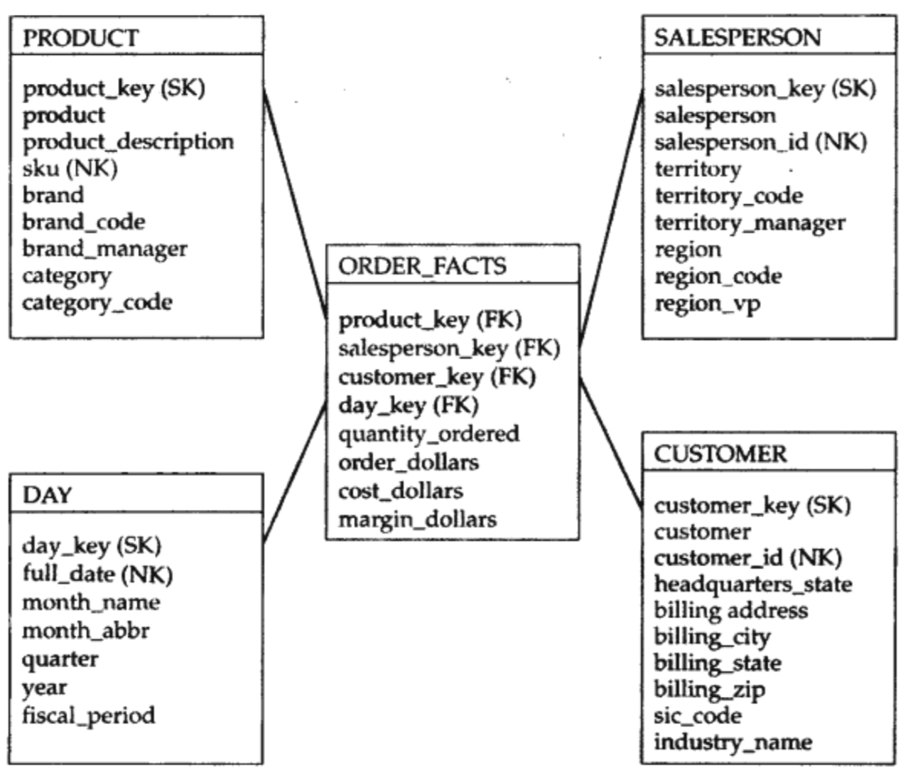
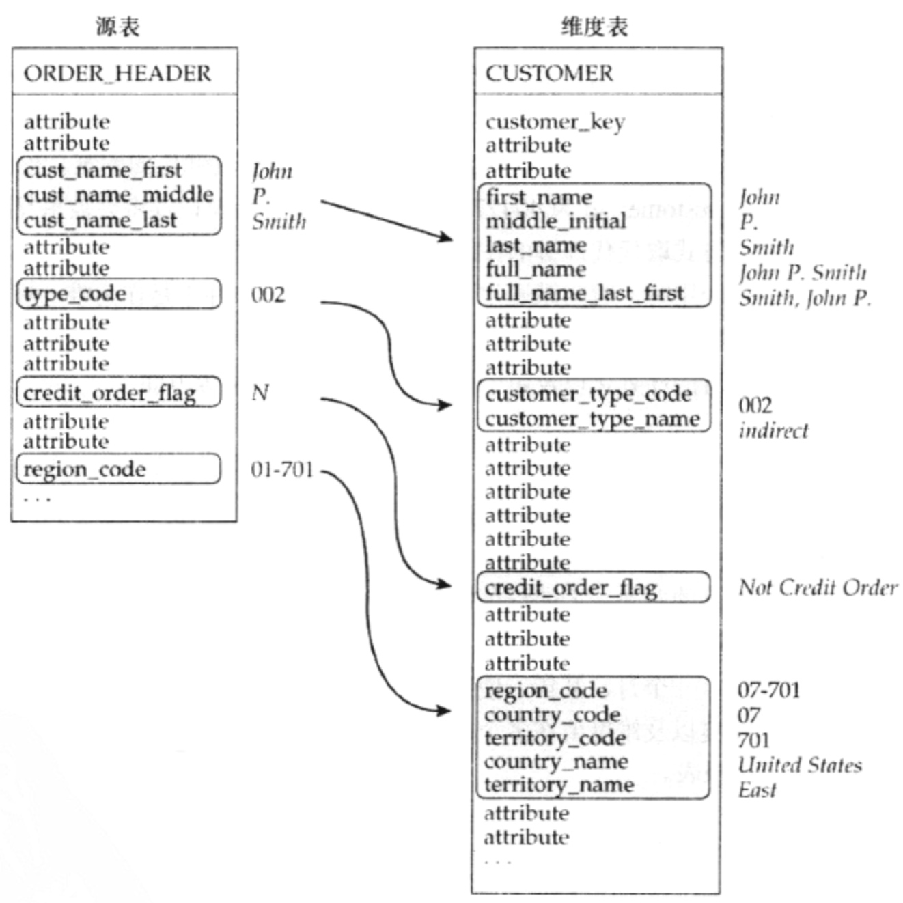
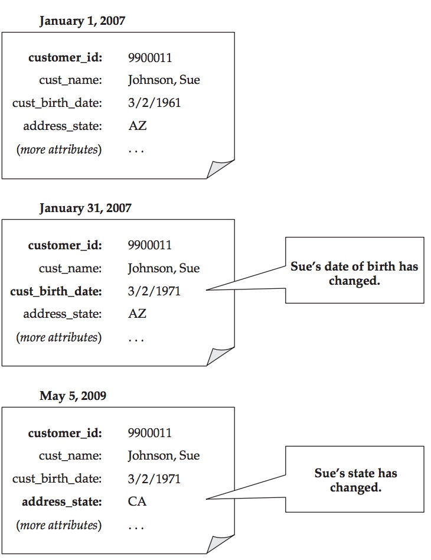
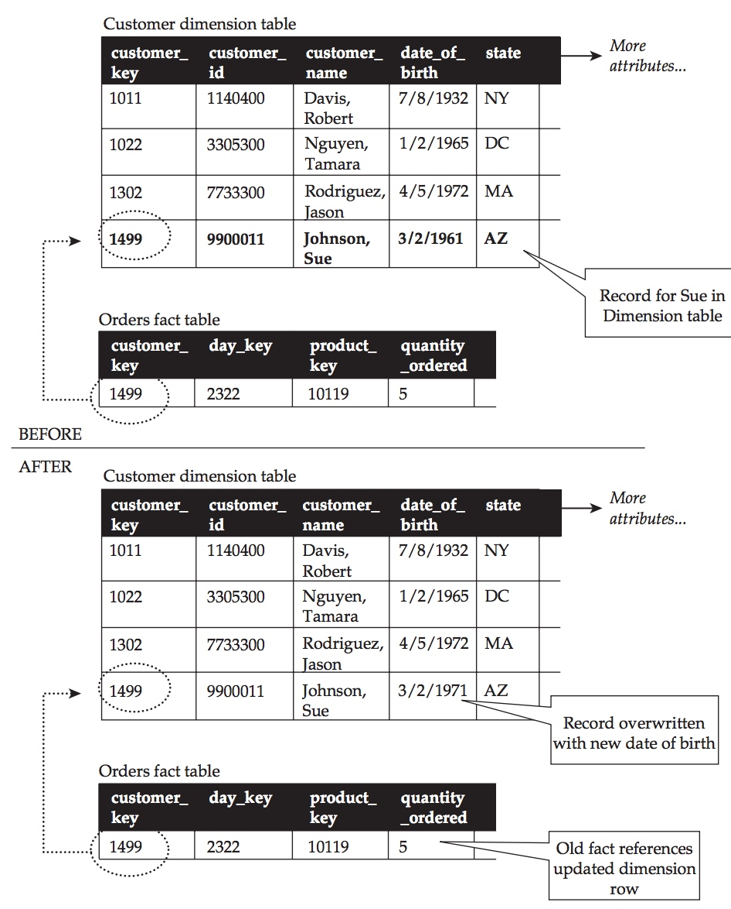
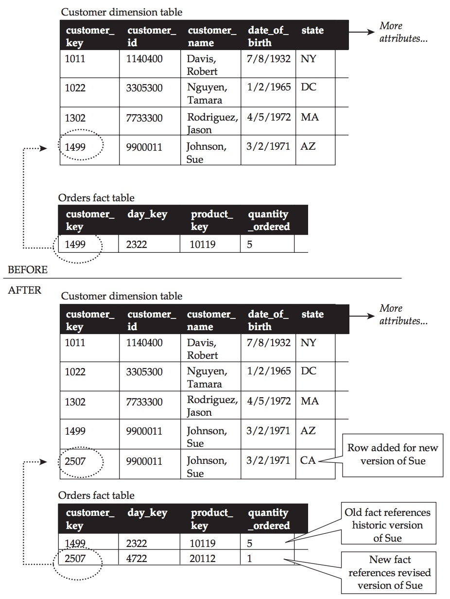

1.维度表特性
1.1 代理键和自然键
- 代理建(SK)是在数据仓库中产生的，他表示星型模型中维度表的唯一性，它不具备业务含义，一般用于处理缓慢变化维。
- 自然键(NK)是来源于源数据, 有可能一个实体中会有多个自然键，它具有业务含义。
- 使用代理键允许数据仓库对源系统发生的变化作出相应，这是因为数据仓库面向的是历史数据的查询，而历史数据的自然键是可以重复的，通过建立代理键来确保维度的唯一性。

但是在实际应用中，我们并不会特意去使用代理键。第一点原因是，对于分布式计算系统，不存在事务的概念，对于每个表的记录生成全局唯一的稳定的代理键难度很大，此处稳定指某条记录每次生成的代理键都相同。第二点原因是，使用代理键会大大增加ETL的复杂性，对ETL任务的开发和维护成本很高
1.2 丰富的维度集合
维度为事实提供了环境，没有环境，事实也无法理解。那么如何建立维度呢，如何将源系统的属性转换为维度呢，以下面这个例子为例:

公共组合
操作系统中, 经常将数据元素尽可能的分解为构建其内容的多个组件。如例子中cust_name_first, cust_name_middle, cust_name_last三个属性就可以组合成人名。而在维度设计的时候，这些组件不但要包含在维度里面，还要尽可能的包含这些组件的组合，比如first_name, middle_initial, last_name, full_name, full_name_last_first。这样就很容易对他们进行分组，排序等操作，且进行一些优化。
代码与描述符
操作系统中，往往一些属性会用代码的形式表示，比如type_code (002), 同时又有其他表来维护代码与描述的映射。比如city_code 0571的描述符是杭州。这大大使得分析查询复杂了。在维度设计中往往把代码和描述符都放在维度表中，使用者就可以根据自己的实际情况来进行过滤，访问和组织信息。比如例子中源数据表中是city_code，而在维度表中就变为了customer_type_code和customer_type_name了。
标志及标志值
在操作系统中，往往使用布尔类型, 或者整数(0/1), 或者字符(Y/N, True/False)这些标志，这些方式便于存储。在维度设计时, 这些标志可用于过滤查询或分组事实, 但是不便于理解。通过采用描述符的值存储标志，可以更方便的使用标志。如例子中，源系统的credit_order_flag(N) 转换为维度表中的credit_order_flag(Not Credit Order)。
多列组合字段
操作系统中通常包含由多个部分组合而成的字段列，各个部分包含不同的意义，比如账号代码，包含了公司标识符，账号代码，分类账号代码等。在维度设计的时候，全部的属性将被存储，用于分割该属性的多个子属性也将被存储。如果这些子属性是代码，那么还要增加相应的描述。比如region_code(01-701), 在维度表中不但包含了region_code(01-701), 还包含了country_code(01)和territory_code(701), 以及他们对应的描述符country_name(United States)以及territory_code(East)。
带有数字值的维度
带有数值的属性很难区分到底是维度还是事实, 一般根据应用去分析。如果一个元素值用于过滤查询，排序数据，控制聚集，区分主从等，那他就是维度。如果对这个元素值进行相加等汇总操作就是事实。
行为维度与混合属性
基于事实计算得到的维度称为行为维度，我们将在后续<深入维度表>中展开介绍。
基于相似性组合维度
具有相似业务特征的维度放在相同的维度表中，比如跟品类有关的维度要么都放在产品维度表中，要么放在自己的维度表中。
无相似性的杂项维度
我们会经常使用杂项维度来组合没有实际关系的维度。杂项维度表是多个杂项维度笛卡尔组合建立的, 所以没有代理键，事实表中的行只对应到部分的列和行上去。我们将在之后的文章中更深入的讲解。
雪花模型和支架表
一般我们尽量少用雪花模型，我们会通过冗余把雪花模型转换到维度表中，或者退化维到事实表中。在之后的文章中会展开。
2. 事实表特性
每个事实表通过获取业务过程的度量来表达业务过程的。一张事实表对应一个业务过程。何为业务过程，业务过程是某个业务的最小单位，比如交易这个业务，支付是个业务过程，退款是个业务过程。度量又叫事实，大多数是数字型的。事实表又可以包含一些维度，称为退化维。
在设计时候要求事实表的粒度是一致的。相对于维度的列宽行少，事实表则是行多列窄，且行增长速度快。对于事实表的事实可以分为可加性事实，半可加性事实，不可加性三种事实。
- 可加性事实。比如交易金额就是可加性事实。
- 半可加性事实。半可加性是指只能按照特定纬度相加才有意义的度量值。比如账户余额，你能对今天的账户余额进行汇总，但是不能对历史的账户余额进行汇总。
- 不可加性是指无论按照那个纬度都不可以相加，或者相加后没有任意的度量值。比如利润率这种类型的事实。
在设计事实表的时候，我们要将不可加性事实转换为可加性事实，比如利润率是利润额度与订单额度的比值, 而利润额度与订单额度是可加的，所以在建事实表的时候需要把两者加到事实表中。
事实表所表达的细节层次被称为粒度，在星型模型中尽可能要求事实表的粒度是最细的，这样保证了分析的最大灵活性。
除了事物标识符外，多数情况下，适合选做退化维的维度最好放置在杂项维度中。比如订单id, 订单状态，订单时间等。
多业务过程事实表
之前谈到，一般情况下一个业务过程对应一张事实表，但是实际使用中每个业务过程的数据量是不一致的，甚至差别巨大，又考虑到存储，性能以及分析需求，往往会将多个业务过程合在一张事实表中。可以有两种方式进行设计，一行多列，以及一列多行。
表1:以订单为例(有两个业务过程refund和pay)，一行多列表示多业务过程事实表。
| order_id | pay_time | pay_amt | refund_time | refund_amt |
|---|---|---|---|---|
| 1 | 2017-02-16 00:00:00 | 60 | 2017-02-17 00:00:00 | 50 |
表2:一列多行
| order_id | create_time | amt | type |
|---|---|---|---|
| 1 | 2017-02-16 00:00:00 | 60 | pay |
| 1 | 2017-02-17 00:00:00 | 50 | refund |
所以还是非常灵活的。
需要说明下，如果源数据在设计表的时候把业务过程区分多个业务过程的话，类似与表1，那么我们进行数据同步的时候能检测到并拆分多个业务过程，但是如果如表3这种设计用离线方式进行数据同步是很难拆分业务过程的。一般只能订阅binlog来实现
表3:
| order_id | create_time | modified_time | statue_code |
|---|---|---|---|
| 1 | 2017-02-16 00:00:00 | 2017-02-17 00:00:00 | 300 |
表3中通过status_code来表示业务过程，比如300表示退款，他覆盖了之前的status_code(200支付)，以及支付时间modified_time,所以不能拆分业务过程。
关于事实表的设计，将在之后的文章中再详细讲解。
3. 缓慢变化维
维度模型中，数据源的数据会发生变化从而使得维度也发生变化，这种变化相对于事实表的变化是缓慢的，所以称为缓慢变化维。

在上图中，客户维度customer_id为9900011的记录变化了2次，分别是生日和地址，而在源数据中只能保存最新的一份，但是在我们数据仓库中会存放历史记录的。
如果我们的维度表不进行相应的处理，就会出现以前的事实对应现在的维度这种错乱的现象，这是不允许的。那么怎么来处理缓慢变化维呢，有以下两种方式。
3.1 变化类型1
变化类型1, 重写维度，用最新的记录覆盖历史的记录。

上图中进行修改之后， 订单事实表的1499对应到了新的维度表1499中, 生日也发生了变化。这就造成了前后指标的不一致性。
3.2 变化类型２
变化类型2插入新的维度行，保留事实的历史环境。

在上图可以看到，修改后，在维度表增加了customer_key为2507的新行，他跟customer_key为1499的有相同的customer_id，而在事实表中同样增加了一条customer_key为2507的记录，这样修改后的维度也有了新的事实。
但是对于给定的自然键customer_id, 有两条的记录存在，会对使用和理解造成麻烦。
3.3 如何选择变化类型
星型模型的一个重要任务就是给维度表设计缓慢变化过程的规则。细心的同学会发现，上面的例子，第一次变化的是生日，第二次变化的是地址，上面的情景可以总结为:
- 对维度表中任意给定的customer_id,如果数据源的date_of_birth发生改变，那么采用新值对已有存在的维度进行重写。变化类型2.
- 对维度表中任意给定的customer_id,如果数据源的state发生改变，那么在维度表中插入新行。变化类型2.
为什么要这么处理，因为date_of_birth是固定的，只有当输入错误的时候我们才会去修改，所以它的历史数据是没有作用的，而state的历史记录是有意义的。
为了维护维度表维护历史信息的能力, 多数情况下，我们都会用变化类型2来处理缓慢变化维。
对于缓慢变化维的更多的处理技术，将在后面单独介绍。